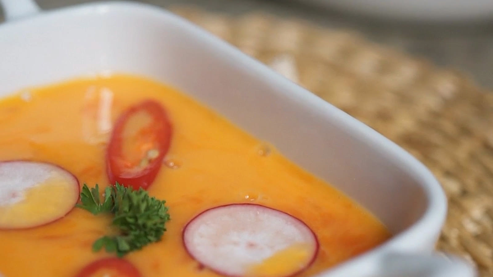

Butternut Squash Soup
- 55 min
- 4 servings
- Soup
Squash and cherry tomatoes roast on one tray, then go into the blender with stock and cream. The chili and radish on top are the crunch.
Ingredients
- butternut squash1, about 1.2 kg
- cherry tomatoes250 g
- onion1
- garlic3 cloves
- olive oil2 tbsp
- hot vegetable stock750 ml
- cream100 ml
- salt and pepper
- red chili, radishes and parsley, to serve
Directions
- Heat the oven to 200°C / 400°F. Halve the squash and scoop out the seeds.
- Halve the tomatoes and cut the onion into wedges.
- Lay everything on a baking tray, cut side up, with the garlic. Drizzle with the oil and season.
- Roast for 40 minutes, until the squash is soft.
- Scoop the squash out of its skin and blend it with the tomatoes, onion, garlic, stock and cream until smooth. Serve with sliced chili, radish and parsley.
Keep this recipe on your phone
Paste the link to this page into Import in TasteKeep, or tap Share on this page and choose TasteKeep. The recipe lands in your book with the photo, ingredients and steps, and cooking mode runs the 40-minute timer for you.
TasteKeep for iPhone and iPad. Free on the App Store. No account, no subscription.
Photo: a frame from the Pexels series by Klaus Nielsen used in our video.